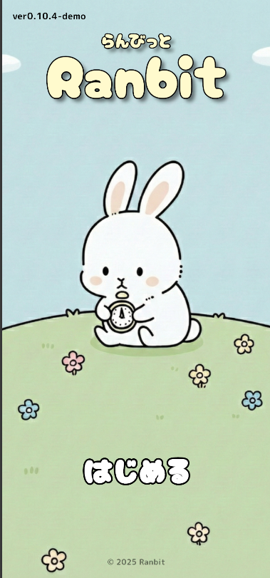
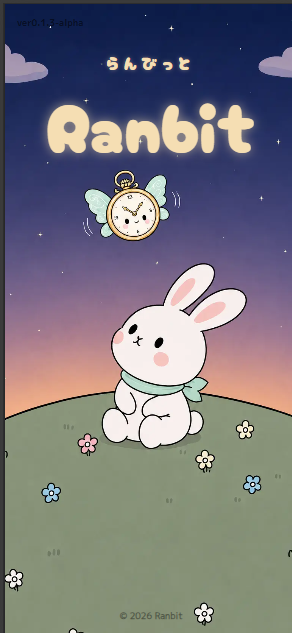

Works
成果物
Ranbit について
物足りないから、またやりたくなる。
Ranbitという名前は「Random（ランダム）」と「Habit（習慣）」を組み合わせた造語です。
作業のタイマーって、残り時間が見えると逆に気になって集中できなかったり、何かを習慣にしようとしても続かなかったり……そんな経験から生まれたアプリです。
終了時間をあえてランダムにすることで、時間を気にしすぎず、自然と「またやりたくなる」感覚をつくるタイマーアプリを目指しています。
アプリコンテスト出展作

旧 Ranbit
アプリコンテストに向けて制作した、アプリ「Ranbit」です。 「まずはアプリとして動くものを完成させる」ことを目標に、タイマー機能や画面構成を実装しました。制作を通して、機能だけでなく、見た目の分かりやすさや「また使いたい」と思える体験づくりの大切さを学びました。
旧Ranbitを実際に見る →※このアプリはスマートフォン向けに制作しています。 PCで閲覧する場合は、ブラウザの検証ツールなどでスマートフォンサイズに切り替えて遊んでみてください。
↓ 進化
開発中

新 Ranbit
旧版で見えた課題をふまえて、世界観から作り直し中。今度は「ただのタイマー」じゃなく、毎日開きたくなるアプリを目指してます。
- 旧版の反省をもとに再設計中
- 市場リリースを検討中
- うさぎキャラクター、癒やし系UIを重視
旧Ranbit と 新Ranbit の違い
| 旧 Ranbit | 新 Ranbit | |
|---|---|---|
| 使用技術 | Android Studio / Flutter | React Native / Expo / TypeScript |
| 世界観 | シンプル | うさぎキャラクター・癒やし系UI |
| 状態 | アプリコンテスト出展済み | 開発中 |